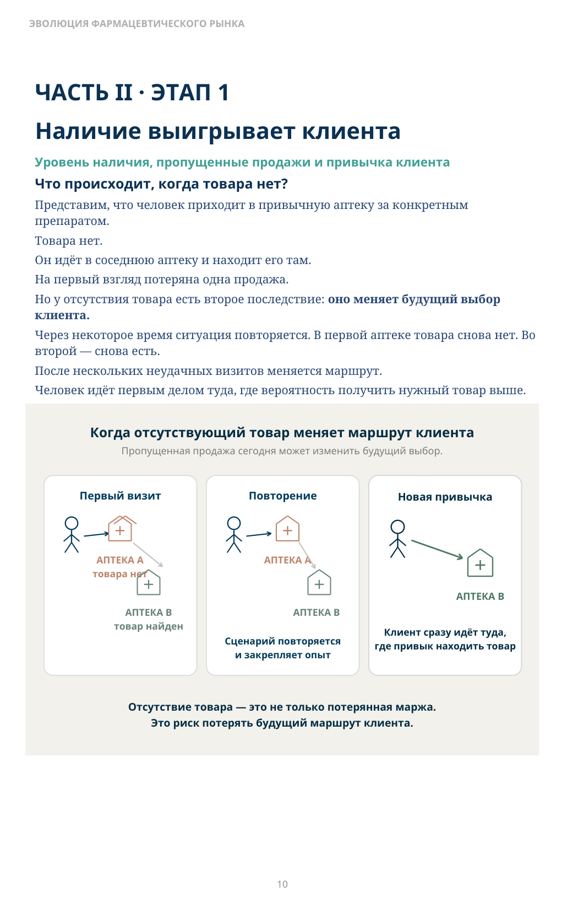
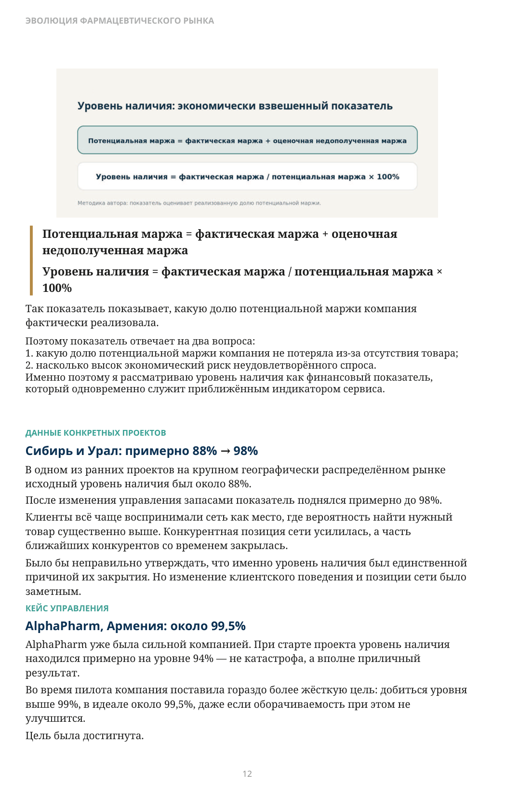
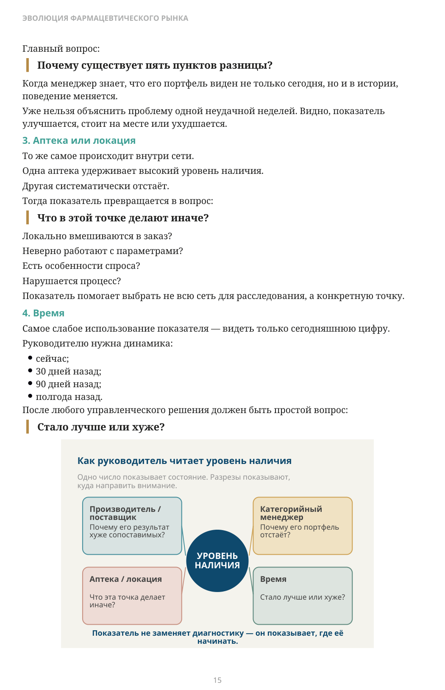
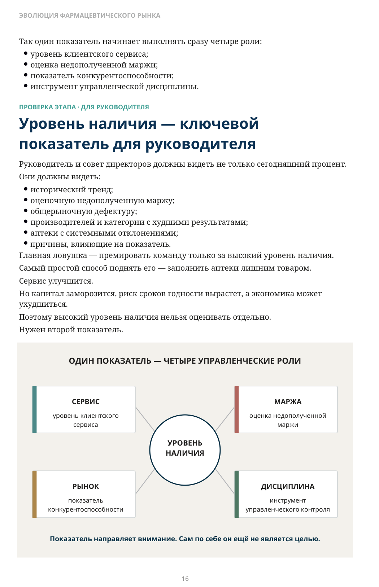

Наличие выигрывает клиента
ЧАСТЬ II · ЭТАП 1
Уровень наличия, пропущенные продажи и привычка клиента
Что происходит, когда товара нет?
Представим, что человек приходит в привычную аптеку за конкретным препаратом. Товара нет. Он идёт в соседнюю аптеку и находит его там. На первый взгляд потеряна одна продажа. Но у отсутствия товара есть второе последствие: оно меняет будущий выбор клиента. Через некоторое время ситуация повторяется. В первой аптеке товара снова нет. Во второй — снова есть. После нескольких неудачных визитов меняется маршрут. Человек идёт первым делом туда, где вероятность получить нужный товар выше.

Описание схемы
FIG_003: ЧАСТЬ II · ЭТАП 1
Схема показывает три сценария после отсутствия товара: первый визит ведёт из аптеки A к аптеке B, повторный визит ещё может вернуть клиента в A, а после формирования новой привычки клиент сразу идёт туда, где ожидает наличие. Вывод схемы: отсутствие товара меняет маршрут и привычку клиента.
Насколько большой должна быть разница, чтобы рынок её почувствовал?
В отчёте 93% и 98% уровня наличия выглядят почти одинаково. Всего пять процентных пунктов. Для клиента такой разрыв может означать заметно более высокий риск не найти нужный товар.
В моей практике устойчивое преимущество примерно в 5 процентных пунктов по уровню наличия неоднократно сопровождалось разницей продаж порядка 20%. Аналогичное соотношение, исходя из собственных наблюдений, независимо отмечали три собственника крупных аптечных сетей. Это не формула: конкретный эффект зависит от исходного уровня наличия, конкуренции и поведения клиентов. Но наблюдение повторялось достаточно часто, чтобы считать такой разрыв стратегически значимым.
При сравнении мы исключаем общерыночную дефектуру. Если товар отсутствует у всех участников рынка и сеть объективно не может его получить, это не её ошибка.
Что именно мы называем уровнем наличия?
Можно просто посчитать, сколько товарных позиций физически есть на полке. Но отсутствие ходового товара и отсутствие товара, который продаётся раз в год, не могут иметь одинаковый вес. Поэтому в нашей методике уровень наличия (availability) рассчитывается через экономический риск пропущенной продажи. Для каждого товара, локации и дня мы смотрим запас. В аптеке риск возникает при нулевом остатке. Для склада — когда остаток становится ниже примерно 5% целевого уровня запаса.
Целевой уровень запаса — не статичный норматив. Это динамический уровень, который система повышает или снижает в зависимости от поведения спроса и состояния запаса. Дальше мы используем актуальную среднюю скорость продаж, как правило, за недавний период около месяца, и оцениваем, сколько товара с определённой вероятностью могло бы продаться в день отсутствия. Эту потенциальную продажу переводим в оценочную недополученную маржу.
Эта метрика — экономически взвешенная оценка доступности через потенциально потерянную маржу. Она не равна буквальному проценту успешных визитов покупателей.
Если данные позволяют, оценка должна учитывать замещение внутри категории: отсутствие конкретной товарной позиции (SKU) не всегда означает потерю всей продажи. Промо, изменение тренда и периоды отсутствия товара также могут влиять на расчёт.
Потенциальная маржа = фактическая маржа + оценочная недополученная маржа
Уровень наличия = фактическая маржа / потенциальная маржа × 100%
Так показатель показывает, какую долю потенциальной маржи компания фактически реализовала. Поэтому показатель отвечает на два вопроса:
- какую долю потенциальной маржи компания не потеряла из-за отсутствия товара;
- насколько высок экономический риск неудовлетворённого спроса.
Именно поэтому я рассматриваю уровень наличия как финансовый показатель, который одновременно служит приближённым индикатором сервиса.
Сибирь и Урал: примерно 88% → 98%
В одном из ранних проектов на крупном географически распределённом рынке исходный уровень наличия был около 88%. После изменения управления запасами показатель поднялся примерно до 98%. Клиенты всё чаще воспринимали сеть как место, где вероятность найти нужный товар существенно выше. Конкурентная позиция сети усилилась, а часть ближайших конкурентов со временем закрылась. Было бы неправильно утверждать, что именно уровень наличия был единственной причиной их закрытия. Но изменение клиентского поведения и позиции сети было заметным.
AlphaPharm, Армения: около 99,5%
AlphaPharm уже была сильной компанией. При старте проекта уровень наличия находился примерно на уровне 94% — не катастрофа, а вполне приличный результат. Во время пилота компания поставила гораздо более жёсткую цель: добиться уровня выше 99%, в идеале около 99,5%, даже если оборачиваемость при этом не улучшится. Цель была достигнута.

Описание схемы
FIG_004: Потенциальная маржа = фактическая маржа + оценочная
Две формулы связывают экономику и сервис: потенциальная маржа равна фактической марже плюс оценочная недополученная маржа; уровень наличия рассчитывается как фактическая маржа, делённая на потенциальную маржу, умноженная на 100%.
Но важнее другое: показатель не исчез после внедрения. Он стал одним из ключевых показателей для руководства и совета директоров. Со временем рынок начал связывать AlphaPharm с очень простым обещанием: если нужен конкретный товар, это одно из первых мест, куда стоит идти. Высокий уровень наличия перестал быть складским показателем. Он стал частью рыночной позиции.
А какой у вас уровень наличия был 90 дней назад?
ERP/POS покажет сегодняшний остаток. Продажи, закупки и перемещения — тоже.
Здесь и далее ERP/POS — условное обозначение базовой операционной системы аптеки. На разных рынках эту роль могут выполнять ERP, POS/EPOS, специализированная аптечная система или их связка.
Но для исторического уровня наличия этого недостаточно. Нужна история состояния каждой товарной позиции (SKU) в каждой локации на каждый день. Такая система прежде всего работает с транзакциями и текущим состоянием: продажами, приходами, перемещениями и документами. Это не недостаток — она решает другую задачу. Для исторического уровня наличия нужен отдельный аналитический слой.
Транзакции и историческое состояние бизнеса
ERP/POS хранит события
Для управления наличием нужна история состояния
- продажа
- приход
- перемещение
- документ
SKU × локация × день
Управление историческим уровнем наличия требует ежедневного состояния, а не только журнала операций.
За годы работы я не встречал ERP/POS-системы, где такая история и оценка пропущенной маржи были бы полноценным стандартным встроенным инструментом. Я видел другое: компании ежедневно выгружали остатки, сохраняли их в отдельном хранилище или кубе и уже там анализировали историю. Это рабочий путь. Но это отдельное аналитическое решение поверх ERP/POS.
В подавляющем большинстве компаний, с которыми я сталкивался, пропущенные продажи системно не измерялись. Компании хорошо знают факт продаж, но гораздо хуже видят потерянные продажи из-за отсутствия товара.
И здесь возникает следующий вопрос:
Если мы уже умеем измерять уровень наличия, кого именно нужно измерять?
Как руководитель использует уровень наличия
Одно число по всей сети полезно, но его недостаточно. Настоящая управленческая сила показателя появляется, когда его можно разложить по ответственным элементам бизнеса.
1. Производитель или поставщик
Обычно поставщика измеряют так:
Мы заказали 100 единиц. Сколько он поставил?
Это уровень выполнения заказа поставщиком. Но для бизнеса важен ещё один вопрос:
Какой фактический уровень наличия продукции этого производителя был в нашей сети?
Сегодня? Месяц назад? Полгода назад? Как он выглядит на фоне другого производителя с похожим товаром? Если один производитель имеет существенно более высокий риск пропущенных продаж, чем сопоставимый, это меняет качество переговоров. Вместо абстрактного:
«У нас с вами проблемы с поставками» можно показать историю:
«Вот уровень наличия вашей продуктовой линии. Вот его динамика. Вот сопоставимый поставщик. Почему здесь разрыв и что мы можем изменить вместе?»
Это не означает, что плохой показатель автоматически доказывает вину поставщика. Причина может находиться внутри самой сети:
- несвоевременная оплата;
- ошибочная карточка товара;
- неверная закупочная политика;
- собственная логистика;
- ассортиментное решение;
- неправильные параметры.
Показатель не заменяет диагностику. Он показывает, где её начинать.
2. Категорийный менеджер
Допустим, пять менеджеров отвечают за разные продуктовые линии. У одного портфеля уровень наличия 97%. У другого — 92%. Главный вопрос не «кто плохой?».
Главный вопрос:
Почему существует пять пунктов разницы?
Когда менеджер знает, что его портфель виден не только сегодня, но и в истории, поведение меняется. Уже нельзя объяснить проблему одной неудачной неделей. Видно, показатель улучшается, стоит на месте или ухудшается.
3. Аптека или локация
То же самое происходит внутри сети. Одна аптека удерживает высокий уровень наличия. Другая систематически отстаёт. Тогда показатель превращается в вопрос:
Что в этой точке делают иначе?
Локально вмешиваются в заказ? Неверно работают с параметрами? Есть особенности спроса? Нарушается процесс? Показатель помогает выбрать не всю сеть для расследования, а конкретную точку.
4. Время
Самое слабое использование показателя — видеть только сегодняшнюю цифру. Руководителю нужна динамика:
- сейчас;
- 30 дней назад;
- 90 дней назад;
- полгода назад.
После любого управленческого решения должен быть простой вопрос:
Стало лучше или хуже?
Стало лучше или хуже?

Описание схемы
FIG_005: Почему существует пять пунктов разницы?
В центре схемы расположен «уровень наличия». Вокруг него четыре управленческих ракурса: производитель/поставщик, категорийный менеджер, аптека/локация и время. Смысл: один показатель не заменяет диагностику, а указывает, где искать причину.
Так один показатель начинает выполнять сразу четыре роли:
Уровень наличия — ключевой показатель для руководителя
Руководитель и совет директоров должны видеть не только сегодняшний процент. Они должны видеть:
- исторический тренд;
- оценочную недополученную маржу;
- общерыночную дефектуру;
- производителей и категории с худшими результатами;
- аптеки с системными отклонениями;
- причины, влияющие на показатель.
Главная ловушка — премировать команду только за высокий уровень наличия. Самый простой способ поднять его — заполнить аптеки лишним товаром. Сервис улучшится. Но капитал заморозится, риск сроков годности вырастет, а экономика может ухудшиться. Поэтому высокий уровень наличия нельзя оценивать отдельно. Нужен второй показатель.

Описание схемы
FIG_006: Уровень наличия — ключевой
Один показатель «уровень наличия» связан с четырьмя управленческими ролями: сервис, маржа, рынок и дисциплина. Схема подчёркивает, что показатель направляет внимание и сам по себе ещё не является целью.